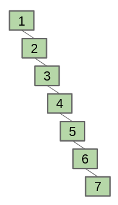
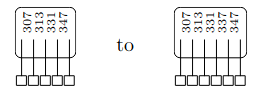
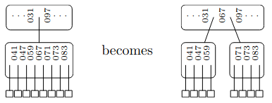

B-Trees
Table of Contents
The problem with binary search trees is that inserting sequentially into one results in a tree that is spindly, and not very well optimized in terms of tree height:

Instead, we would like to design a self-balancing tree that keeps itself balanced (i.e. optimizes its height) as you insert into the tree. This allows us to search and update the tree with guaranteed efficiency.
1. B-Trees
A B-tree of order \(m\) is a tree that satisfies the following properties:
- Every node has at most \(m\) children.
- Every node, except for the root and the leaves, has at least \(\frac{m}{2}\) children.
- The root has at least \(2\) children, unless it is a leaf.
- All leaves appear on the same level, and carry no information.
- A non-leaf node with \(k\) children contains \(k-1\) keys.
1.1. Inserting
To insert a key, simply change the appropriate node like so:

However, if the appropriate node is already full, then we can split the node into two parts and pass the middle key up to the previous level:

This insertion technique preserves all of the B-tree properties.